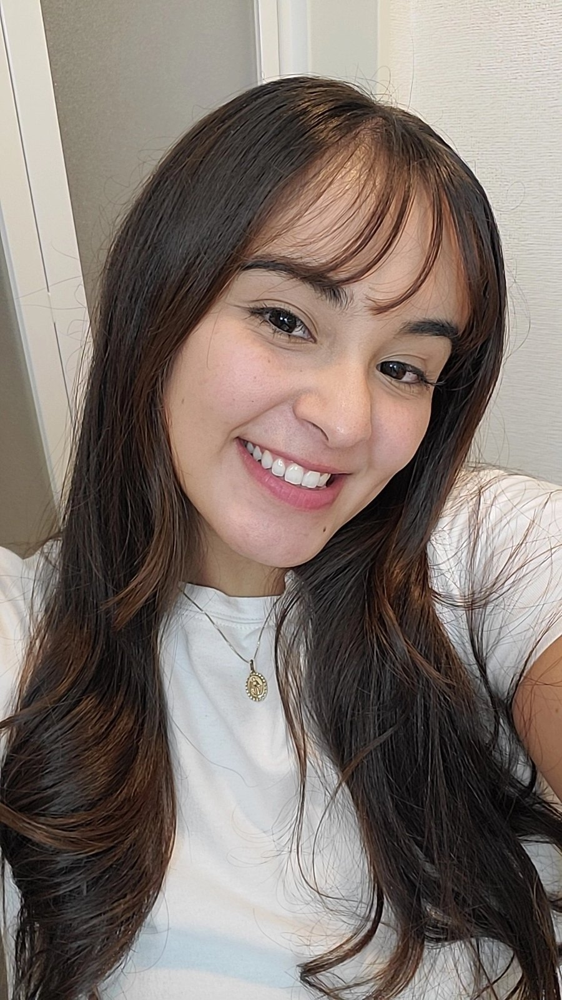

Recorto ideias,
colo cores
e crio
histórias
.
Crio identidades visuais, logotipos e carrosséis para marcas com alma — de clubes do livro a marcas de skin care. Tudo com um toque autoral e muito afeto.
↳ bora fazer algo único juntas?
Meu portfólio
Escolha uma pastinha e explore cada universo que eu ajudei a construir.
Vídeos que prendem do primeiro ao último segundo.
Produzo conteúdos dinâmicos pensados para cada plataforma: roteiro visual, cortes ritmados, legendas animadas, trilha e identidade da marca em cada frame.
Ver vídeos no portfólioYouTube
vídeos longos · 16:9
Vlogs, aulas e vídeos educativos com narrativa envolvente, thumbnails e capítulos.
Reels & Shorts
Verticais 9:16, ganchos fortes e cortes no ritmo da trend.
Reels de marca
Publis e lançamentos com a identidade visual do cliente.
minha caixinha de ferramentas ✂
Meu processo
-
01.
Briefing & escuta
Entendo sua marca, público e objetivos.
-
02.
Moodboard
Referências, cores e a "vibe" do projeto.
-
03.
Criação
Design e edição com ajustes em parceria.
-
04.
Entrega ✦
Arquivos organizados e prontos para postar.
Blog & temáticas
Capas dos carrosséis que eu criei sobre design, leitura, idiomas e autocuidado.
psiu, vem cá ↓
Vamos criar algo juntas?
Me conta sobre sua marca ou ideia de projeto. Respondo em até 2 dias úteis.